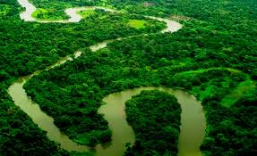

Biosfera del rio Plátano
La reserva de la biosfera de rio platano esta localizada a los alrededores de rio
platano en la Mosquitia, la region en costa caribeña de honduras
La biosfera es la zona mas grande de bosque encontrada en honduras esta zona cuenta
con una gran biodivercidad deecosistemas, que van desde pantano,manclares,bosques de pino,sabanas
bosques llubiosos, tropical y los bosques enanos de la recerva.Se pueden observar varias especies de
aves mamiferos y reptiles. Ubicada en la desembucadura del rio ploatano
la reserva es uno de lo pocos valuartes de selva tropical que quedan en
Centro America y cuenta con una flora y fauna silvestre de gran diversidad
y su paisaje montañoso qure desiende asta la costa del caribe
mas de 2000 mil indigenas an conservado de vida tracional.
